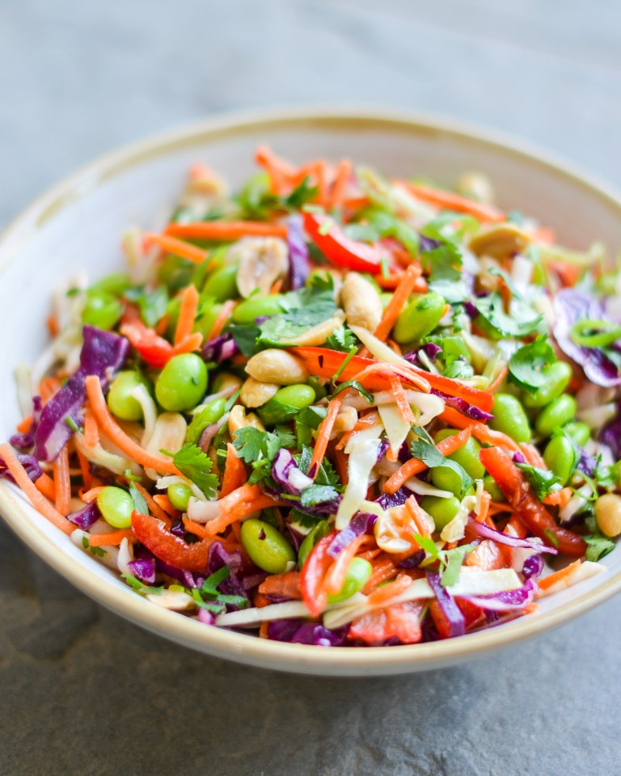

Asian Slaw with Ginger Peanut Dressing

Description
This Asian slaw is a great way to eat your colors, and it’s every bit as delicious as it is healthful. I know the list of ingredients looks long but please don’t let that discourage you. The great thing about the recipe is that it makes use of all the prepared vegetables available at the supermarket today, like shredded coleslaw, grated carrots, and shelled edamame. Pair the slaw with any simply prepared Asian chicken, fish or pork dish. It makes a lot so you’ll have plenty of leftovers for lunch, in which case it’s delicious all on its own.
Ingredients
FOR THE GINGER PEANUT DRESSING:
- ¼ cup honey
- ¼ cup vegetable oil
- ¼ cup unseasoned rice vinegar
- 1 tablespoon soy sauce
- 1 teaspoon Asian sesame oil
- 1 tablespoon peanut butter (I like Skippy Natural No Need to Stir)
- Heaping ½ teaspoon salt
- 1 teaspoon Sriracha sauce (optional)
- 1 tablespoon minced fresh ginger
- 1 large garlic clove, minced
FOR THE SLAW:
- 4 cups prepared shredded coleslaw
- 2 cups prepared shredded carrots
- 1 red bell pepper, thinly sliced into bite-sized pieces
- 1 cup cooked and shelled edamame
- 2 medium scallions, finely sliced
- ½ cup chopped salted peanuts (or you can leave them whole)
- ½ cup loosely packed chopped fresh cilantro
Directions
- Begin by combining all of the ingredients for the dressing in a mixing bowl.
- Whisk until the peanut butter is dissolved. Set aside until ready to dress the slaw; the dressing can be made up to a few days ahead of time.
- Next, combine all of the slaw ingredients in a large mixing bowl.
- Before serving, add the dressing and toss well.
- Let the slaw sit for at least ten minutes so the vegetables have a chance to soak up the dressing. Taste and adjust seasoning if necessary (I usually add a bit more salt), then serve chilled. This slaw is best served fresh but leftovers will keep in a covered container in the refrigerator for a few days
Back to Homepage